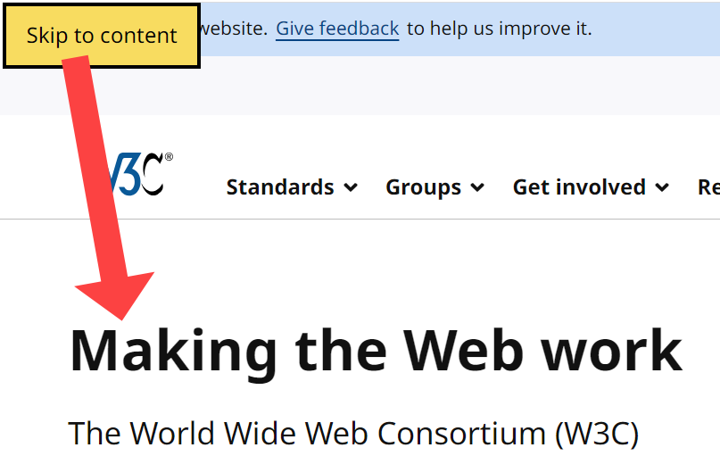
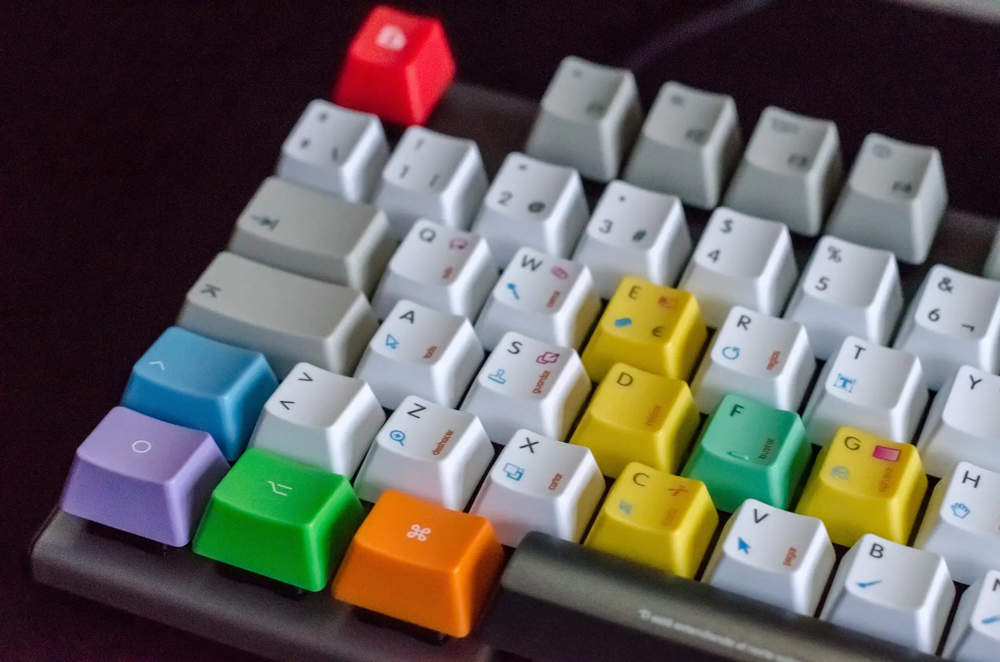
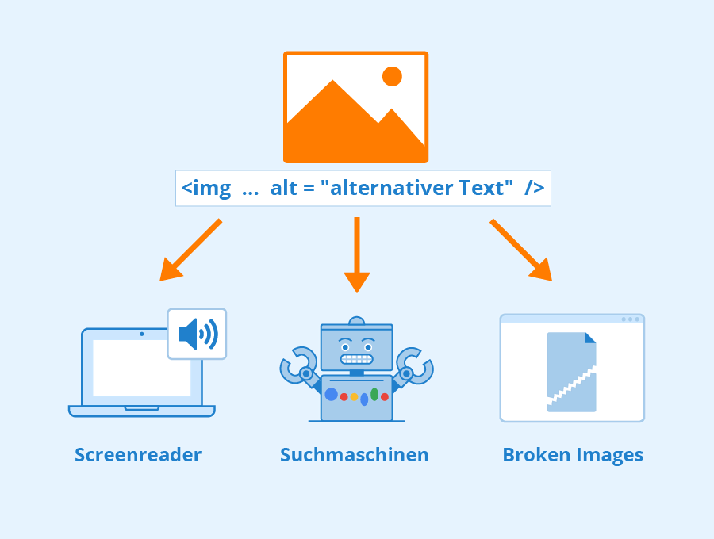
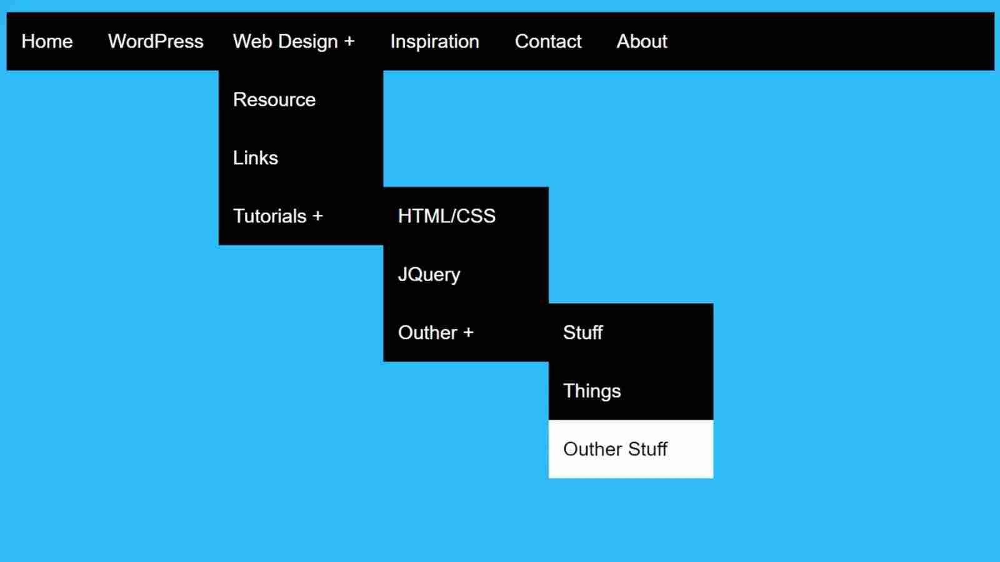
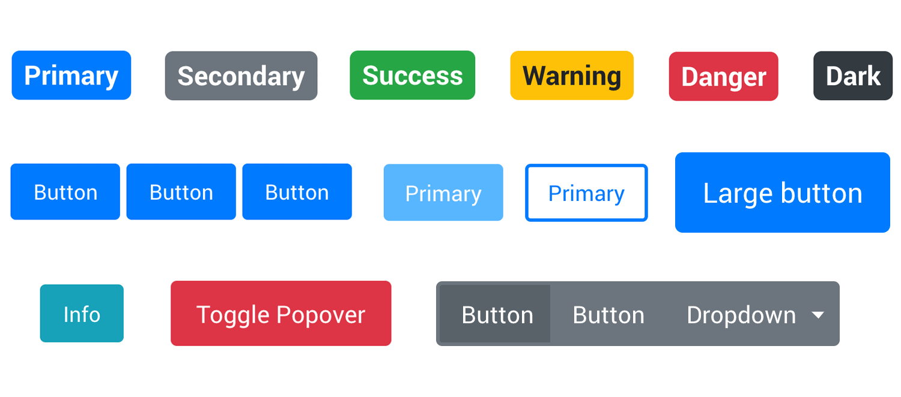
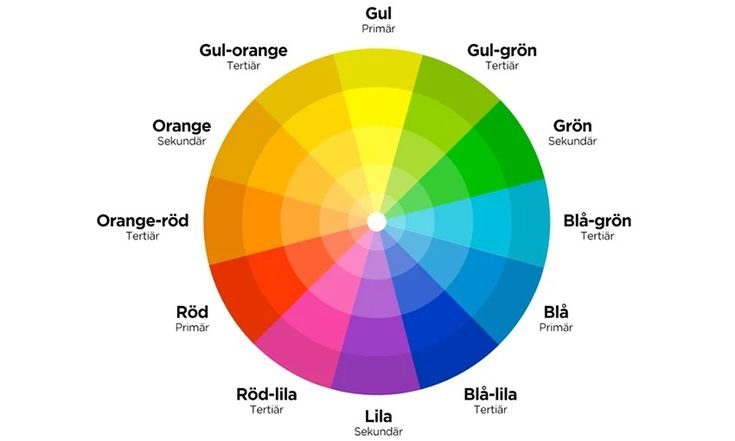

Bakgrund
Webbtillgänglighet innebär att webbplatser och digitala tjänster ska kunna användas av alla människor, oavsett om de har fysiska, sensoriska eller kognitiva begränsningar. Genom att göra webben tillgänglig säkerställer man att fler kan ta del av information, kommunicera och utföra digitala uppgifter på ett självständigt sätt.
Skip-link
Skip-links är länkar som gör det möjligt för användare att hoppa över repetitiva navigeringsmenyer och direkt gå till huvudinnehållet på sidan. Detta är särskilt viktigt för personer som använder skärmläsare eller tangentbord.

Tangentbordsnavigering
Alla funktioner på webbplatsen bör kunna nås och användas helt med tangentbordet. Detta hjälper personer med motoriska begränsningar, synnedsättning eller de som föredrar tangentbord framför mus.

Alt-attribut för bilder
Alt-texter beskriver innehållet i bilder och gör det möjligt för skärmläsare att läsa upp informationen. Dekorativa bilder kan ha tom alt-text (alt="").

Tydlig navigering
En logisk och konsekvent navigationsstruktur gör webbplatsen lättare att använda. Tydliga menyer och rubriker hjälper användare att hitta information snabbt.

Klickbara områden
Knappar och länkar bör vara tillräckligt stora för att klickas på enkelt. Detta förbättrar användbarheten på mobila enheter och för personer med motoriska svårigheter.

Färgkontrast
Tillräcklig kontrast mellan text och bakgrund är viktig för läsbarhet. Det hjälper personer med synnedsättning och färgblindhet.
